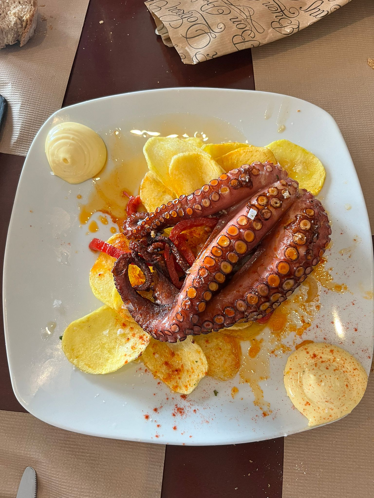
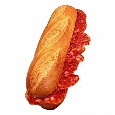
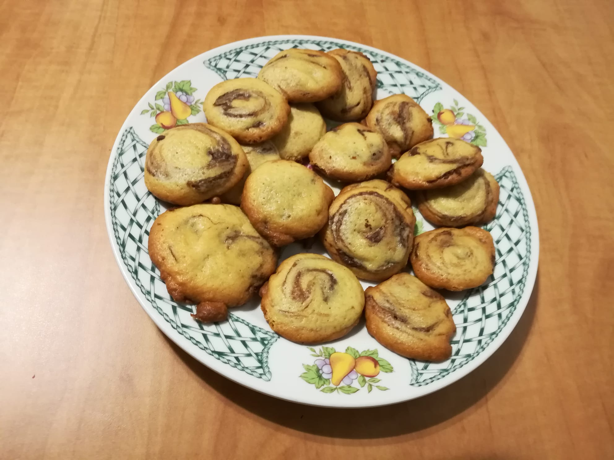

Recetas Ilustradas
Explora algunas de nuestras recetas más queridas y aprende a prepararlas en casa con nuestras guías paso a paso.
Índice de Recetas
Pulpo a la Gallega
Un plato gallego clásico con pulpo cocido, rociado con aceite de oliva, sal gruesa y pimentón sobre una base de patatas.
Pasos para preparar Pulpo a la Gallega:
- Cocer el pulpo en agua hirviendo durante 40-50 minutos.
- Cortar el pulpo en rodajas y colocar sobre patatas cocidas.
- Rociar con aceite de oliva, sal gruesa y pimentón al gusto.
Bocadillo de Chorizo
Una deliciosa combinación de chorizo asado en pan crujiente, ideal para un bocado rápido y lleno de sabor.
Pasos para preparar Bocadillo de Chorizo:
- Asar el chorizo hasta que esté dorado.
- Abrir el pan crujiente y colocar el chorizo caliente.
- Servir de inmediato para disfrutar su sabor.
Pastitas de Té
Pequeños bocados dulces y crujientes, perfectos para acompañar una taza de té o café en la sobremesa.
Pasos para preparar Pastitas de Té:
- Mezclar la harina, mantequilla y azúcar hasta formar una masa.
- Estirar la masa y cortar en pequeñas formas.
- Hornear a 180°C durante 12-15 minutos o hasta que estén doradas.